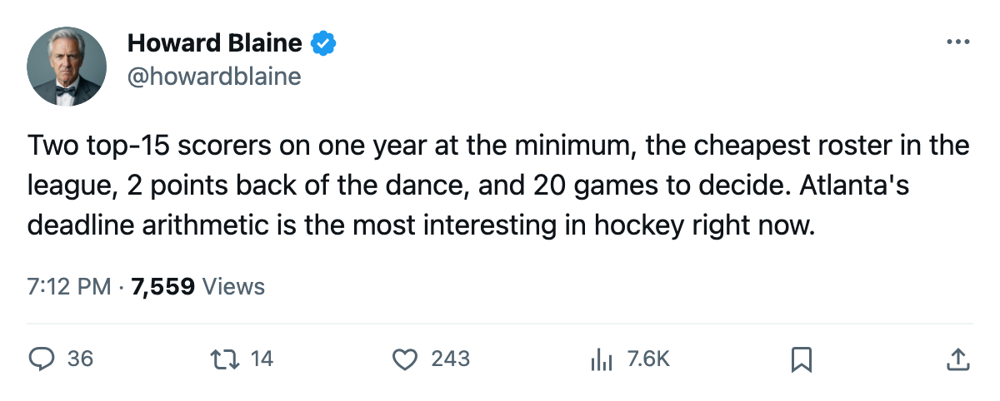
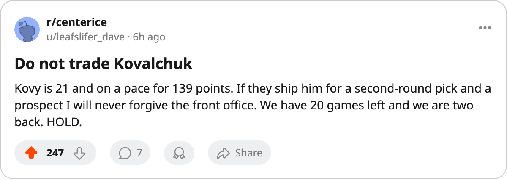

Atlanta has two 100-point men on one year at $1.10M, the cheapest roster in hockey, and 17 days to decide
The Thrashers are 2 points back of the 8th spot with a league-high 20 games remaining and a 14-point last 10 masking a 3-2-11 record inside the Southeast Division
 Howard BlaineSenior writer, The Blaine Rankings · The Hockey Gazette
Howard BlaineSenior writer, The Blaine Rankings · The Hockey Gazette
 Ilya Kovalchuk91 has 105 points in 62 games.
Ilya Kovalchuk91 has 105 points in 62 games.  Dany Heatley90 has 97 in 59. Both are paid $1.10M. Both are unsigned beyond this season.
Dany Heatley90 has 97 in 59. Both are paid $1.10M. Both are unsigned beyond this season.  Atlanta Thrashers plays its 63rd game tonight at
Atlanta Thrashers plays its 63rd game tonight at  Mighty Ducks of Anaheim, and what the calendar has as the trade deadline arrives in 17 days.
Mighty Ducks of Anaheim, and what the calendar has as the trade deadline arrives in 17 days.
The arithmetic is unusual. Atlanta sits 9th in the Eastern Conference at 64 points, 2 behind  New York Islanders at 66, with 20 games remaining to the Islanders' 19. The Thrashers have collected 14 points from their last 10 games, a pace of 1.4 a night. At that rate over the final 20 contests, Atlanta finishes at 92, well clear of the 8th-place line. The last 10, though, are a sample inside a season where the club is 3 regulation wins and 2 overtime wins in 16 games inside the Southeast Division, a 52-goal-for and 66-goal-against ledger that would bury a club in a tighter race.
New York Islanders at 66, with 20 games remaining to the Islanders' 19. The Thrashers have collected 14 points from their last 10 games, a pace of 1.4 a night. At that rate over the final 20 contests, Atlanta finishes at 92, well clear of the 8th-place line. The last 10, though, are a sample inside a season where the club is 3 regulation wins and 2 overtime wins in 16 games inside the Southeast Division, a 52-goal-for and 66-goal-against ledger that would bury a club in a tighter race.
The payroll floor and the two contracts on top of it
Atlanta's payroll is $36.79M, the lowest in the league.  Edmonton Oilers sits at $36.81M,
Edmonton Oilers sits at $36.81M,  Minnesota Wild at $37.91M. The cost per point is $0.57M. Revenue is $57.10M and the profit is $21.80M. Attendance is 14,193 a night at $78 a ticket. These are the numbers of a club in no financial difficulty.
Minnesota Wild at $37.91M. The cost per point is $0.57M. Revenue is $57.10M and the profit is $21.80M. Attendance is 14,193 a night at $78 a ticket. These are the numbers of a club in no financial difficulty.
What they describe is a club whose two best forwards are both on one year at the league minimum for a player of their production. Kovalchuk is 21, graded 86, on a pace of 139 points over 82 games. Heatley is 24, graded 84, on a pace of 135. If Atlanta decides it is a buyer at the deadline, it does not need to acquire either of these men. It needs to keep them. If it decides it is a seller, it needs to move them while other clubs still see 20 games of runway in the standings.
The divisional ledger is the problem
Atlanta is 3-2-11 inside the Southeast over 16 meetings, scoring 3.25 goals a night against its divisional opponents and allowing 4.13. Against the other 25 clubs in the league, the goals for per game rises to 3.52. The Thrashers have 4 divisional games and 16 non-divisional games left. If the non-divisional form holds at 3.52 goals a night and the team continues at 1.4 points per game, the math works. The 14 points from 10 contests are real, but they come against a schedule that is about to get harder at the margins.
Why the deadline matters more here than anywhere else
A club that moves Kovalchuk or Heatley before March 19 gets a prospect, a draft pick, or a salary-dump piece from a club that is contending. A club that waits until the season ends on April 6 gets nothing for a player who walks in July. The 20 games remaining are long enough for a seller to matter, which means they are also long enough for a buyer to wait and see whether the hot streak extends. Every day Atlanta stays quiet is a day its leverage drops.
The parallel from this week's coverage is  Chicago Blackhawks, which sits at 57 points, 9 back of 8th in the West, and has already begun shopping. Chicago's general manager told The Tunnel's Jan Kowalczyk that his club is "listening to everyone" and that he is "not ruling it out either direction" on
Chicago Blackhawks, which sits at 57 points, 9 back of 8th in the West, and has already begun shopping. Chicago's general manager told The Tunnel's Jan Kowalczyk that his club is "listening to everyone" and that he is "not ruling it out either direction" on  Eric Daze87. Atlanta's situation differs in one way: Chicago is mathematically alive but 9 points back. Atlanta is 2 back with more games in hand. The Thrashers are still playing for something, which makes them a club that should not be selling its best pieces.
Eric Daze87. Atlanta's situation differs in one way: Chicago is mathematically alive but 9 points back. Atlanta is 2 back with more games in hand. The Thrashers are still playing for something, which makes them a club that should not be selling its best pieces.
| Club | Payroll | Points | $/point | GP left | Gap to 8th |
|---|---|---|---|---|---|
| ATL | $36.79M | 64 | $0.57M | 20 | 2 |
| NYI | $53.57M | 66 | $0.81M | 19 | 0 |
| OTT | $42.80M | 63 | $0.68M | 17 | 3 |
| PIT | $44.95M | 63 | $0.71M | 18 | 3 |
| BUF | $44.16M | 62 | $0.71M | 19 | 4 |
The Islanders, one spot higher, pay $16.78M more for 2 additional points. Atlanta carries the least money in the league and the most remaining games.
The case for holding
Atlanta has produced a top-five scorer in the league this season. Kovalchuk's 105 points rank 5th, ahead of  Vincent Lecavalier89's 105 in fewer games (Lecavalier has played 59). Heatley's 97 rank 13th. Two players in the top 15 is rare for any club in hockey, let alone the one with the smallest payroll. If these two are traded separately to two different clubs, those clubs acquire top-15 scoring without giving up a single first-round pick.
Vincent Lecavalier89's 105 in fewer games (Lecavalier has played 59). Heatley's 97 rank 13th. Two players in the top 15 is rare for any club in hockey, let alone the one with the smallest payroll. If these two are traded separately to two different clubs, those clubs acquire top-15 scoring without giving up a single first-round pick.
The Thrashers would be making that concession only if they believed the 20 games left could not be won at the pace required to pass New York Islanders. The last 10 suggest they can. The divisional record says they cannot. The deadline is 17 days away, and Atlanta has not yet spoken.

